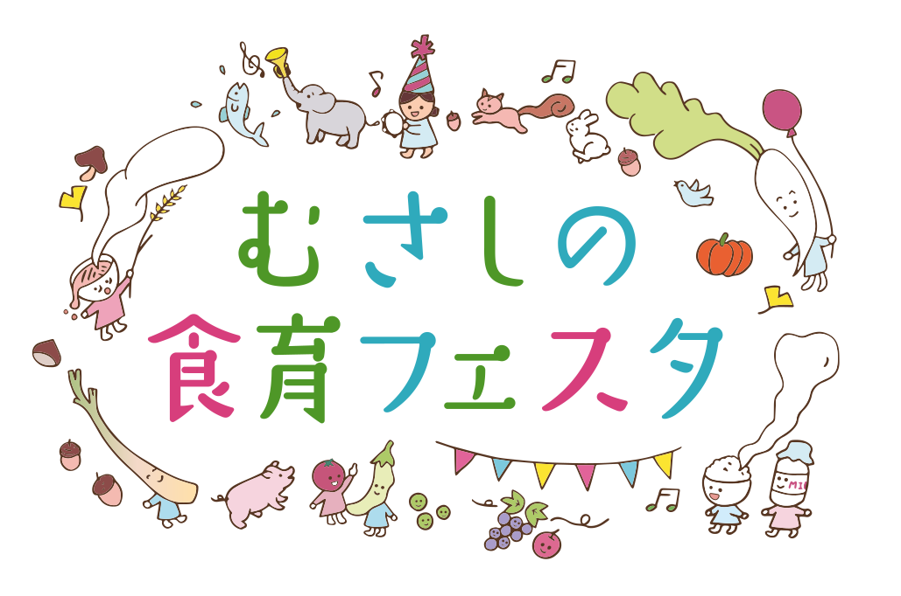
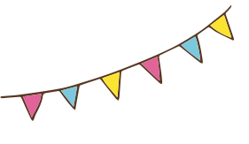
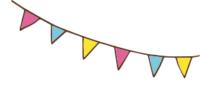
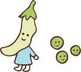
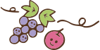

 
2021年
12
月
15
日(水曜日) から
2022年
1
月
31
日(月曜日)
武蔵野市では、市民の皆さんの食が豊かになるように、
幅広い分野で食を通した様々な取り組みを行っています。
その様子を知っていただきたく、
「むさしの食育フェスタ」を開催することになりました。
今年はオンラインでの開催ですので、
いつでも、何度でもたくさんのコンテンツを楽しんでいただけます。
皆さんがこのイベントで豊かな気持ちになっていただけたら幸いです。
武蔵野市 食育ロゴマーク
井の頭池をモチーフに、武蔵野市ならではの武蔵野地粉うどんや東京うどを盛り込んでいます。
  味わう

外でも、おうちでも
かんたん！キャンプめし
- 講師：
- NPO法人国際自然大学校
佐藤繁一（企画 健康課）
キャンプの楽しみと言えば、キャンプ料理。外で食べるのは格別ですが、自宅でもメスティン（飯ごう）やフライパンを使って、アウトドア気分を楽しむことができます！ 基本の白いごはんや、おしゃれで美味しい炊きこみごはん、アクアパッツァとしめのパスタなど、手軽で美味しい「キャンプめし」を、料理実演を交えながら紹介します。
動画はこちら
給食調理員が作る！
体にうれしい「まごわやさしい」
和食とスイーツレシピ
- 講師：
- （一財）武蔵野市給食・食育振興財団 調理員
【まごわやさしい】って知っていますか？これは栄養豊富な食材の頭文字を並べた物で栄養バランスの良い食事をする上で欠かせない７文字です。ま…豆類 ご…ごま わ…わかめ 海藻類 や…野菜 さ…魚 し…しいたけ きのこ類 い…いも類 みなさんの食事はどうですか？今回は簡単に作れて日々の食事で取り入れられるような給食の献立を紹介します。ぜひお試しください！
動画はこちらやさしい減塩
- 講師：
- 高齢者食事学研究会栄養士
庵原きみ子（企画 高齢者支援課）
加齢に伴い、味の濃い食べ物を好むようになります。そのため、高齢の方は塩分を摂り過ぎてしまい、高血圧になりやすくなります。そこで、高血圧を予防して健康に生活するための減塩のコツを紹介しています。血圧を下げる働きのある食品の紹介や減塩のための調味料の使い方等役立つ情報が盛り沢山になっています。
動画はこちらブロッコリーまるごと使いきりレシピ（ダイジェスト版）
- 講師：
- マノ料理学園 間野実花
（企画 ごみ総合対策課）
昨年オンラインで実施、好評だった間野実花先生（マノ料理学園園長）によるリメイクレシピ講座のダイジェスト版です。ひとつのブロッコリーを茎から花まで使いきり、5つの料理に生まれ変わらせます。食材を選ぶときのお役立ち情報もあります。短い時間でどなたでも気軽に視聴できるようになっています。ぜひご覧ください。
動画はこちら知る
「美肌」を手に入れる！
「食べたもの」が「自分の美しさ」に変わる ～幸せオーラをまとった自分になるために、体の内側から整える食べ方～
- 講師：
-
健康づくり人材バンク
管理栄養士 浜本 千恵
（企画 健康づくり支援センター）
美肌とは、どんなお肌のこと？そして、美肌になるための食生活のポイントとは？？
美肌につながるお料理の作り方も動画でお届け。健康美を保つモデルの食事例もご紹介。美肌に欠かせない『腸活』のポイントもおさえて、今日から何か、始めてみませんか？身体の内側から整える食べ方で、幸せオーラも手に入れましょう！
楽しむ
身近な材料を使って親子で工作
「おべんとう作り」＆手遊び
「おべんとう箱あけたら！？」
- （公財）武蔵野市子ども協会
０１２３吉祥寺・０１２３はらっぱ
紙や毛糸を使っておにぎりやおかずを作ります。いろんなおかずをたくさん作っておべんとう箱につめたらできあがり！おべんとうの手遊び歌や０１２３施設で行っている食育の取り組みも紹介しています。
動画はこちら収穫野菜動画
- 子ども育成課 市内保育園・こども園
保育園では、子どもと一緒に野菜を栽培しています。収穫した野菜を子どもの目の前で調理員が包丁で切ったり調理してＬＩＶＥ感を味わい楽しくいただきます。栽培を通じ自然の恵みに感謝し五感を使い、おいしさを感じることで食べる意欲につなげます。子どもたちは目を輝かせ様子を見ています。
動画はこちら? クイズコーナー
煮物にしたりプリンやケーキにしても美味しいよ。ずっしり重たいこの野菜はなーんだ？
かぼちゃ
緑のほかに赤や黄色の仲間もいるよ。少し苦いこの野菜はなーんだ？
ピーマン
天ぷらにしたり炒めたり漬物にして食べるよ。この野菜はなーんだ？
なす
泥の中で大きく育つよ。穴がたくさんあいているこの野菜はなーんだ？
れんこん
丸くて葉っぱが何枚も重なっているよ。レタスに似ているこの野菜はなーんだ？
きゃべつ
夏においしいこの野菜はなーんだ？
えだまめ
似ている野菜「白菜」はどっち？
鍋物には欠かせない秋冬野菜。
- 1
- 2
- 1 白菜
似ている野菜「里芋」はどっち？
ぬめりは便秘解消のもと。
- 1
- 2
- 2 里芋
何の野菜の葉っぱでしょう？
秋の味覚の代表格。
さつまいも
何の野菜の葉っぱでしょう？
和洋中どんな料理にも大活躍。
肌や粘膜を健康に保つよ。
人参
メスティン（飯ごう）でご飯を炊くとき、メスティンを火にかけたら動かさない方が良いのでしょうか？
- 1 ○
- 2 ×
-
2
×
時々動かすのがポイント
詳しくは、動画「外でも、おうちでもかんたん！キャンプめし」をご覧ください。
日本の伝統的な食材の頭文字を合わせた合言葉になっている「まごわやさしい」。「ま」は「豆」、「ご」は「ごま」のことですが、では「し」とは何の食材でしょう？
- 1 しいたけ
- 2 しそ
- 3 しじみ
-
1
しいたけ
詳しくは、動画「給食調理員が作る！体にうれしい「まごわやさしい」和食とスイーツレシピ」をご覧ください。
１日の食塩の目標量は、成人男性で、１日何グラムより少なくおさめるのが良いでしょうか？
- 1 小さじ１と1/4(7.5g)
- 2 小さじ１と1/2(９g)
- 3 小さじ２(12g)
-
1
小さじ１と1/4(7.5g)
詳しくは、動画「やさしい減塩」をご覧ください。
ブロッコリーを洗うときどこから洗うとよいでしょうか？
- 1 茎から
- 2 花から
- 3 丸ごと
-
2
花から
詳しくは、動画「ブロッコリーまるごと使いきりレシピ（ダイジェスト版）」をご覧ください。
おせち料理の「黒豆」にこめられた意味は何でしょう？
「まめに暮らせるように」という願いがこめられています。
詳しくは、動画「知って楽しい 食べて美味しい おせち料理の世界」をご覧ください。
武蔵野市の特産品は何でしょうか？
- 1 東京ウド
- 2 本田ウリ
- 3 ごせき晩生小松菜
-
1
東京ウド
いずれも江戸東京野菜といわれる伝統的な野菜で、②は葛飾区③は江戸川区で栽培されていました。
武蔵野市内にある農産物直売所は「武蔵野市の農業の取り組み」をご覧ください。
アンケート
「食育フェスタ」をご覧いただき、ありがとうございました。
市ではこれからも食を通じた取組みを続けてまいります。
今後の参考にさせていただきますので、アンケートにご協力をお願いいたします。